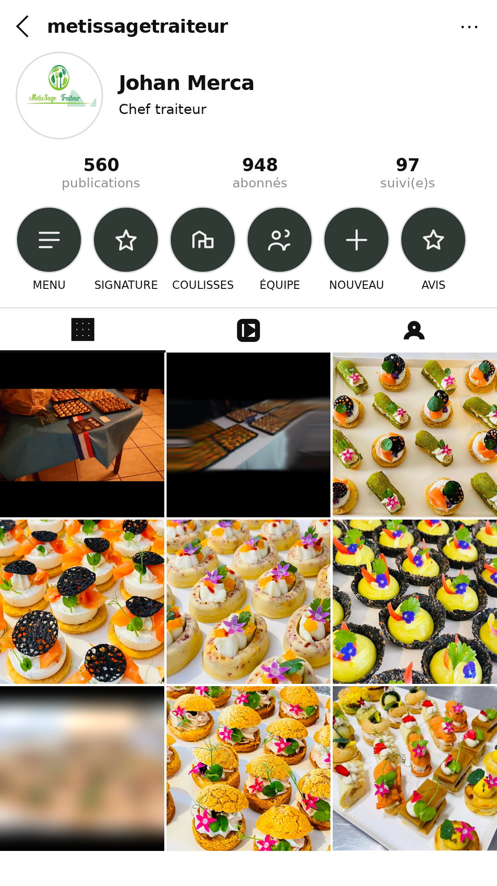

Maquette du feed — démo prospect
Deux méthodes, le même prospect
Même établissement, MetisSage traiteur, à gauche l'image produite par le générateur, à droite la même maquette composée en HTML à partir des données réellement scrapées. L'écart ne porte pas sur le goût : il porte sur ce qui est vrai.
Générateur d'imagesce qui part aujourd'hui · ~6 crédits par tirage

- Prix inventés : 18 €, 35 €, 24 €, 19 €, 28 €, remises −15 % et −20 %
- Horaires inventés : lundi-vendredi 9h-18h
- Avis client fabriqué, signé « Sophie & Marc »
- Plats inventés de toutes pièces
- Un gros logo au lieu du profil, 12 tuiles au lieu de 9
Composition HTMLproposition · 0 crédit, rendu identique à chaque fois

- Vrai pseudo @metissagetraiteur, vrai nom, vraie bio
- Vrais compteurs : 560 publications, 948 abonnés, 97 suivis
- Leur vrai logo en photo de profil
- Leurs neuf vraies photos, reprises telles quelles
- Aucun prix, aucun horaire, aucun avis — rien n'est généré
Pourquoi le générateur n'y arrive pas
Ce n'est pas un problème de consigne. Vérifié dans les données d'exécution : le prompt envoyé
contenait bien le profil, les pastilles, la grille 3×3, le nom exact et les sept interdictions,
et le modèle de texte a répondu llm_ok: true. C'est le générateur d'images qui
décroche : il suit le début d'une consigne et ignore les longues listes de « ne pas », puis
retombe sur son gabarit appris — une planche d'affiches de restaurant avec des prix.
Raccourcir le prompt de 2 522 à 674 caractères en formulation positive n'a rien changé.
Bilan mesuré : 2 tirages conformes sur 6.
Ce que ça change concrètement
| Générateur | HTML | |
|---|---|---|
| Contenu inventé | 4 fois sur 6 | impossible par construction |
| Photos montrées | photos de banque | les leurs |
| Nom du commerce | parfois remplacé | celui du compte |
| Coût par prospect | ~6 crédits | 0 |
| Deux passages de suite | résultats différents | identiques |
L'argument de vente change aussi
L'image générée dit « voici un feed imaginaire ». La version HTML dit
« voici VOS photos, mieux présentées » — et le commerçant reconnaît ses propres
pâtisseries dans la grille. C'est plus difficile à balayer d'un revers de main.
À noter, visible sur la maquette : trois de leurs photos portent des bandes noires incrustées. Ce n'est pas un défaut du rendu, c'est leur contenu réel — et c'est précisément un argument à leur montrer.
À noter, visible sur la maquette : trois de leurs photos portent des bandes noires incrustées. Ce n'est pas un défaut du rendu, c'est leur contenu réel — et c'est précisément un argument à leur montrer.
Le rendu est produit par previsualisation/taches/feed-html.mjs à partir
du profil Instagram scrapé par le workflow existant. Aucun appel payant.
Généré le 25/08/2026.